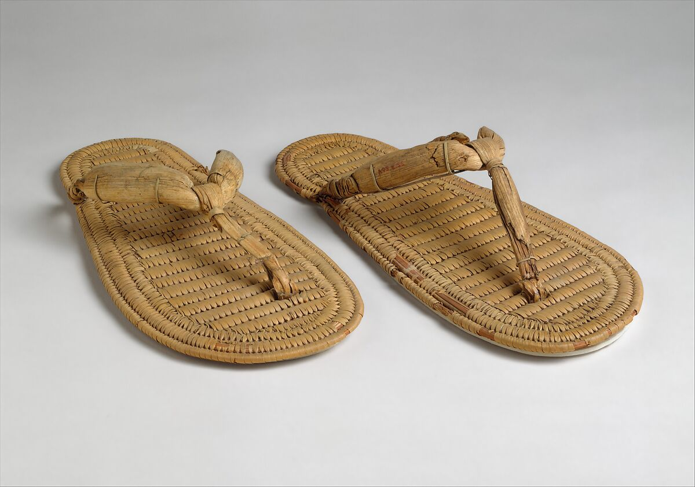
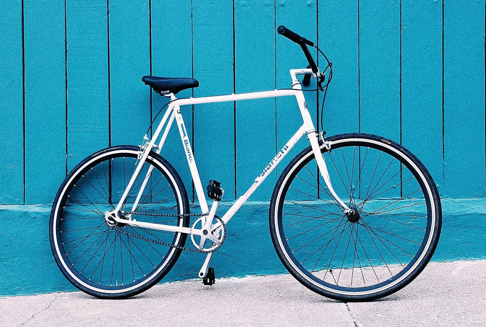
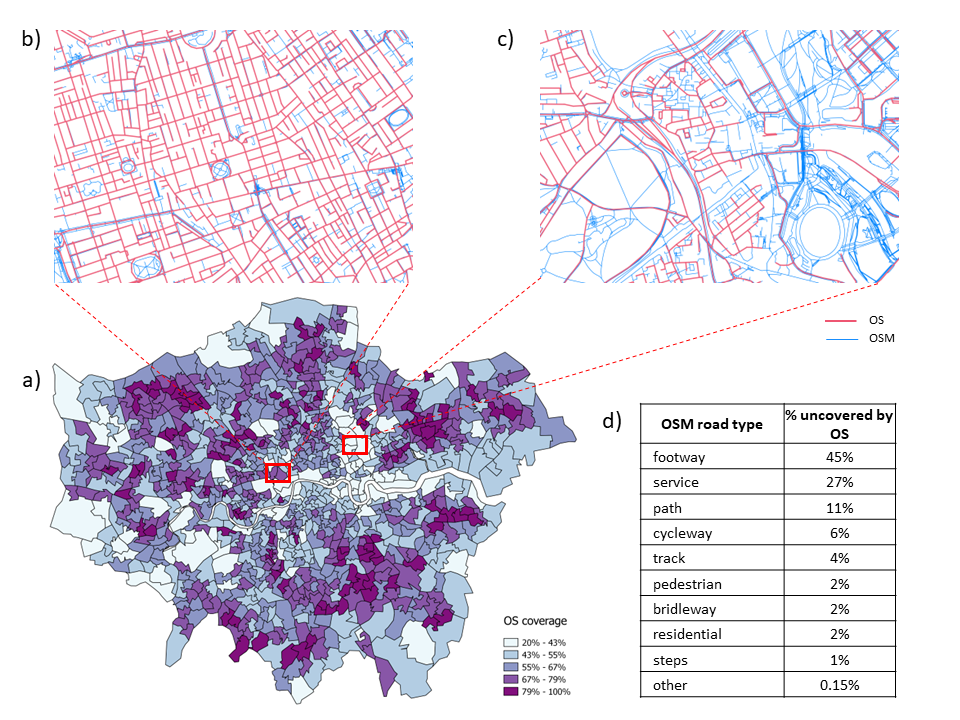
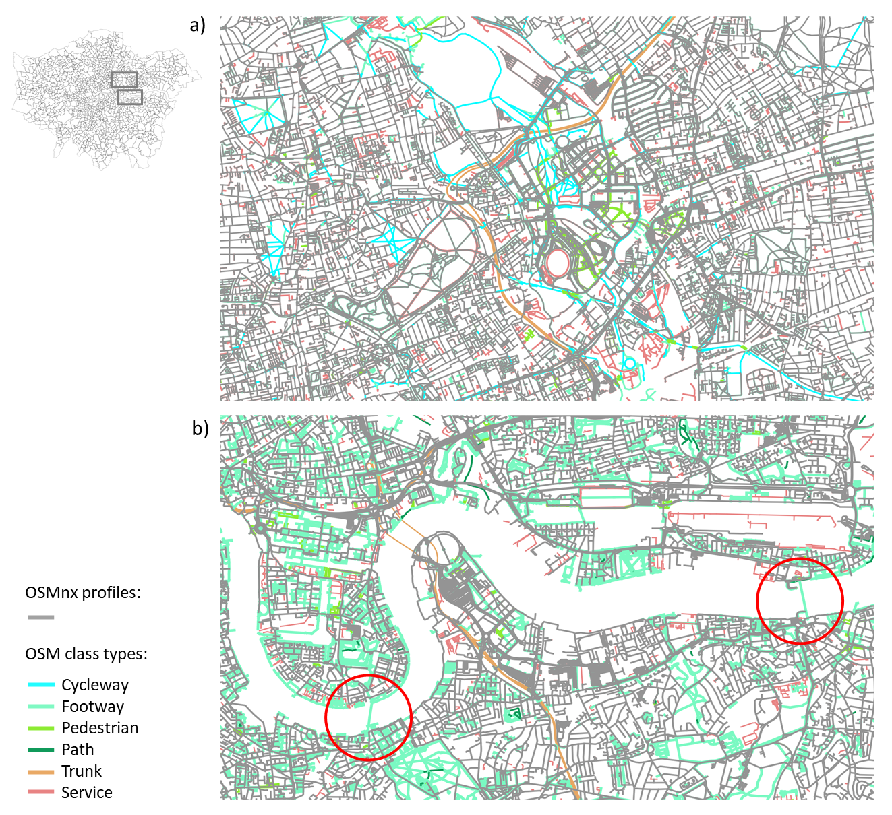
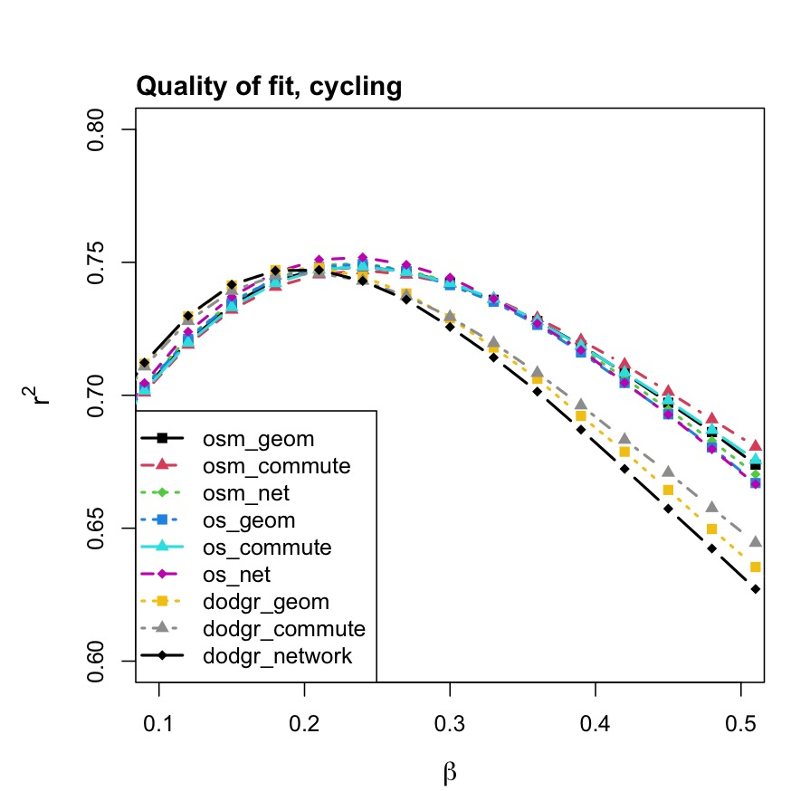
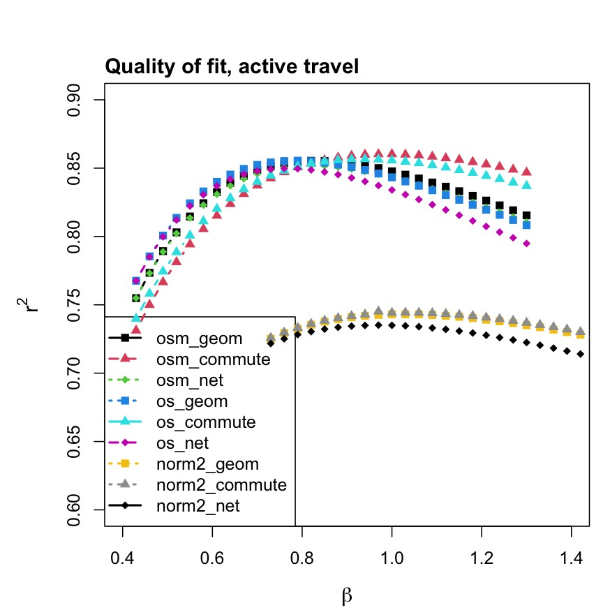
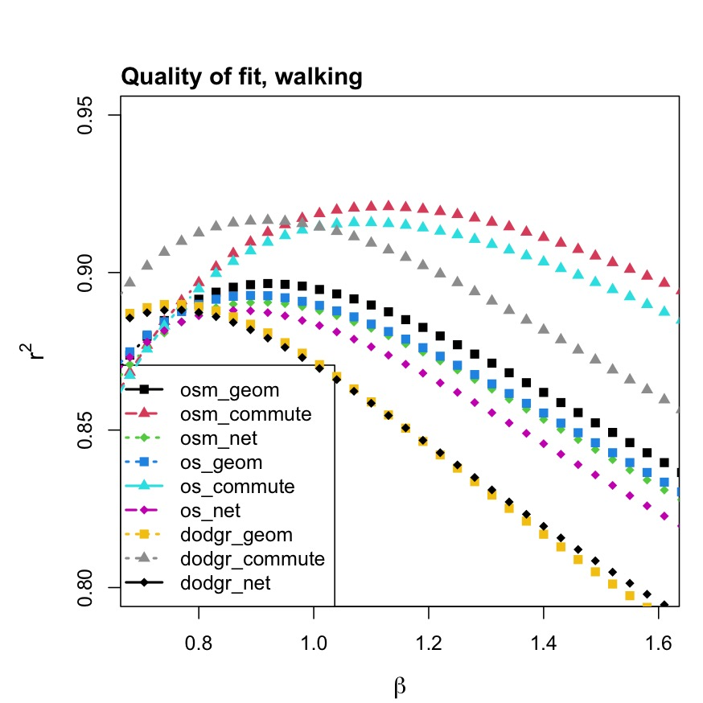

The use of a personal vehicle remains a dominant mode of transport even in cities. The urban environment has been extensively developed with vehicle use in mind. But this is changing in light of research indicating the negative impact that cars have on cities and their inhabitants. To name a few, noise and particle pollution, congestion, requirement for large parking areas, collision danger (Hidalgo 2020; Fleury et al. 2021; Saunders et al. 2013).
Active travel (AT) represents a simple yet powerful alternative to private vehicle use. A great amount of car trips on short distances could be made by AT.
Contributing to this shift in priorities involves having accurate representation of walkable and cyclable networks. And a quantitative understanding of AT mobility.
Developing further models for predicting the use of such modes of transport is important for promoting the right change in the transport infrastructure.
The London Plan
Puts active travel in the center of the discussion on redevelopment of local areas and global transport connectivity.
Policy D1 London’s form, character and capacity for growth
Area assessments should cover the elements … 4) Existing and planned transport networks (particularly walking & cycling networks) and public transportation connectivity.
Cities mentioning AT as a priority in their mobility strategy are spread around the world: Chicago, New York, Singapour, Paris and more…
Transport mode choice


Context
The QUANT model(Batty and Milton 2021) for benchmarking transport or employment change from the point of view of sustainability and benefit for commuting journeys. A country scale SIM. Ultimately provide a user friendly, open source, highly efficient model capable of running country scale scenarios within seconds to the relevant actors.
Methodology
The many open source tools out there aim at solving various aspects, combining them into one workflow that allows to build a full, self-sufficient model from scratch with ease of scalability, review some of the tools on the way and develop when missing appeared relevant.
Network, Routing, Spatial interaction
In order to get a more comprehensive understanding of the various methods, data sources, existing software available, we experimented with workflows that would combine a testing process of the various steps involved.
Network
Data sources
Profiles based on mode of transport
Software
Consistency, quality
Routing
Origins and Destinations
Software
Performance
Spatial interaction
Scalability, Robustness
Quality of fit
Reusability
Network
OpenStreetMap
Ordnance Survey
One being the main reference for open source georeferenced information in the world, the other being the official data set of roads in the UK.

Network: cycling and walking

Routing
Centroids
Geometric
Network
Subset of road nodes inside urbanised areas (exclude parks, water bodies etc…)
The cppRouting package is used to have a local, self-sufficient workflow, without compromising the performance.
Spatial interaction model
Model
Flow data
Using the wu03ew table at MSOA level from the 2011 census, we build flow matrices.
Area of residence
Area of workplace
Bicycle
On foot
E02000001
E02000001
33
1304
E02000001
E02000014
0
0
E02000001
E02000016
0
0
at
1337
0
0
SIM
A doubly constrained spatial interaction model that is calibrated on the distance matrices (in km) and flow, using the foot and bike variables from the flows.
\[
T_{ij}=A_i O_i B_j D_j exp(-\beta d_{ij})
\]
Package
To perform the this step, a set of functions in R and C++ were developed as a package called cppSim and published on github and (hopefully) soon on CRAN.
Notably, it takes about 50 milliseconds for one model run on London’s \(983\times 983\) OD matrix.
glm and dependent packages were running out of memory / taking very long. Further development can be done to provide a full set of functionalities around routing, and SIMs as one single R package that would be highly efficient.
Results



Greater impact for walking, with high quality of fit especially for commute centroids on all networks.
Probably due to the better estimate of intra flows
Less impact on cycling, although regular networks outperform slightly the custom weighted ones.
When combined, the best of both worlds seems to emerge, with high quality of fit, more homogeneous results across networks and the commute centroids being slightly better with full OSM and OS networks.
Conclusion
The emergence good quality open source network data has promoted the development of powerful open tools to manipulate and use them.
We use these tools with the 2011 UK CENSUS data on foot and bicycle commuting flows to:
Compare the different approaches that can be adopted (network profile, routing locations)
Bring awareness to the data consistency and it’s geographic spread
Develop a reproducible, self-sufficient workflow that is highly efficient even for large scale areas and networks.
The final step of our analysis required the development of new tools.
Links
Active-travel modelling: a methodological approach to networks for walking and cycling commuting analysis
Paper on arxive
cppSim - fast and memory efficient doubly constrained SIMs
cppSim package
Thank you for your attention !
References
Batty, Michael, and Richard Milton. 2021. “A New Framework for Very Large-Scale Urban Modelling.”Urban Studies 58 (15): 3071–94. https://doi.org/10.1177/0042098020982252.
Csardi, Gabor, and Tamas Nepusz. 2006. “The Igraph Software Package for Complex Network Research.”InterJournal Complex Systems: 1695. https://igraph.org.
Fleury, Vanessa, Rebecca Himsl, Stéphane Joost, Nicolas Nicastro, Matthieu Bereau, Idris Guessous, and Pierre R. Burkhard. 2021. “Geospatial Analysis of Individual-Based Parkinson’s Disease Data Supports a Link with Air Pollution: A Case-Control Study.”Parkinsonism & Related Disorders 83 (February): 4148. https://doi.org/10.1016/j.parkreldis.2020.12.013.
Hidalgo, César A. 2020. “Trillion Dollar Streets.”Environment and Planning B: Urban Analytics and City Science 47 (7): 1133–35. https://doi.org/10.1177/2399808320949295.
Saunders, Lucinda E., Judith M. Green, Mark P. Petticrew, Rebecca Steinbach, and Helen Roberts. 2013. “What Are the Health Benefits of Active Travel? A Systematic Review of Trials and Cohort Studies.”PLoS ONE 8 (8). https://doi.org/10.1371/journal.pone.0069912.